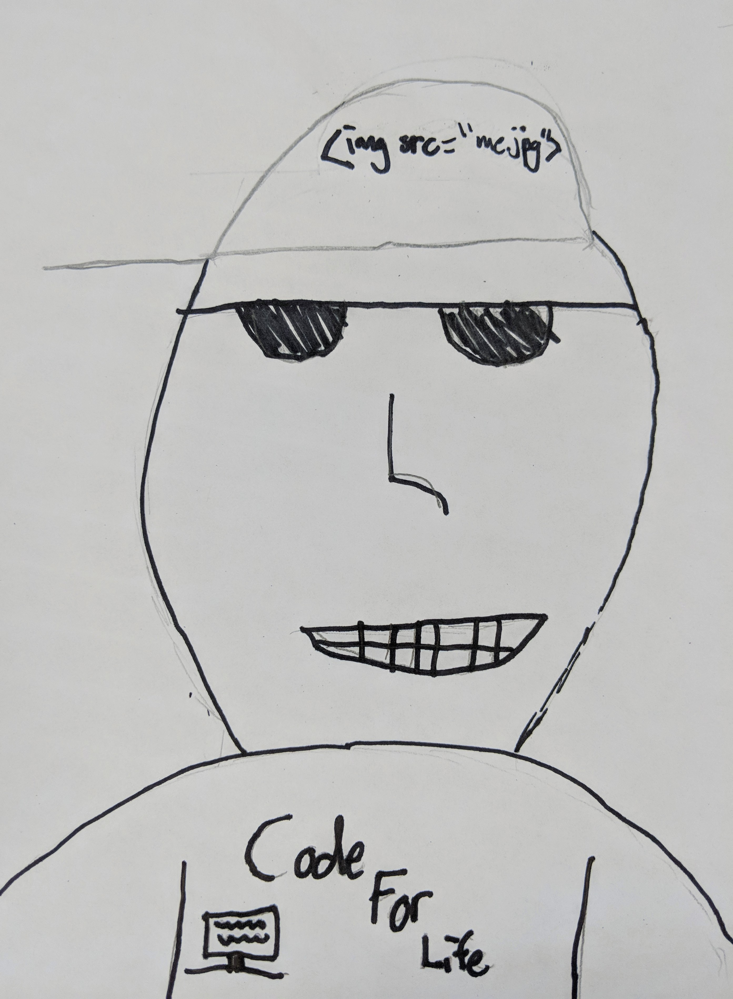
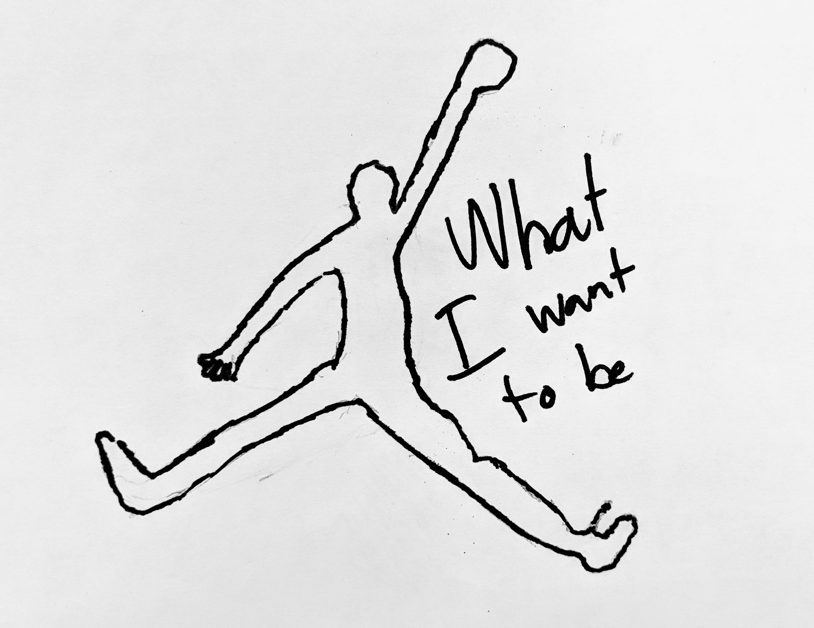

The Problem that My Invention Solves is...
When people hold their glasses, put them somewhere for the night, or hold their glasses to clean them, sometimes they might break. This holds your glasses in a safe, easy-to-put glasses holder!
Most Important Features:
- Adjustable holder for diffrent lengths of glasses.
- Eay to take, portable/
- High holder for the lengths of the part that goes over your ear.
- Sturdy, stable, and secure!
Who Will Use It?
People who wear glasses.
It will Cost: $15.99
About the Inventor
 I'm the inventor, Brandon.
Born in 2007, Brandon is a expert coder and future engineer. He has dreams of becoming a basketball player.